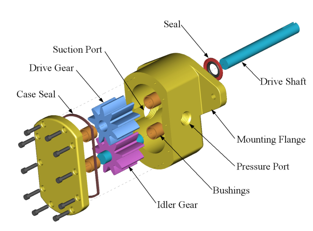

The application should display a üêâ and a number of clicks.
The number of clicks should increment when the üêâ is clicked.
Specifics of layout/style are up to you (but keep affordances & UX
in mind)
Open a new Github repo and post your solution there
Remember events and event listeners?
var elem = document.getElementById('üêâ');
elem.addEventListener('click', function(e){
//the element has been clicked...
// do stuff here, like increment the counter variable
});
How did you solve this?
Mutating a global variable in the listener callback works.
Create a Markdown file in the folder
with your name as the title (i.e. JonDoe.md)
Write your reflections paragraphs in that markdown file
Remember our markdown syntax?
Commit your changes to your forked repo
Open a Pull Request against the original
/reflections
repo
The Client Called, Reqs have changed üò£
It's typical for reqs to change several times over the development
lifecycle. Learn to roll with it.
All software development is an iterative process
(i.e. many steps - Mostly forward, some backward)
Common Reasons for Req changes:
Client's business needs change
Audience changes and/or new data about the intended audience
Technical constraints discovered during development
Security concerns arise
Dragon 2️⃣ Duo
Same app, MORE DRAGONS!
The client now wants 2 dragons. Can we do it?
Client's new Reqs:
Display two üêâs on the screen
Display the type of each dragon above it
For example: Fire, Water, Earth dragons etc... (they like
elemental dragons)
Use CSS to style the different dragon types distinctly
Show the number of clicks next to each associated dragon
Click counts should increment independently of each other
How did you solve it?
We could just add a second variable and eventListener...
But, that's more loose global variables... Would that continue to
scale?
What if we contained the variables in an object?
Is it too soon to consider some kind of templating function?
To style the dragon types how about a CSS class like
.fire?
How about using CSS filter: hue-rotate(); perhaps?
Reflections
Are you happy with your method of üêâ duplication?
Is it scalable?
Did you "hard-code" the types?
Did you duplicate code anywhere?
Can you share a technique of encapsulation or D.R.Y. coding you
used?
D.R.Y. - Don't Repeat Yourself
Repeating code twice isn't so bad, but by three times?
Try using a Factory Pattern or some other duplication pattern
The Client Called Again with new Reqs!! üò±
Dragon Arena üèüÔ∏è
A topbar nav with a list of 5 dragon types
A separate area to display the üêâ's themselves (one shown at a time)
The display area should show the üêâ's type, icon, and click count
When the dragon type in the nav is clicked, a new üêâ of
the type that was clicked should be added to the display area (i.e.
so you could have two separate fire dragons)
Click count must be unique to each üêâ & increment when clicked
Reminder on Closures
var nums = [1,2,3];
for (var i = 0; i < nums.length; i++) {
// This is the number we're on...
var num = nums[i]
// We're creating a DOM element for the number
var elem = document.createElement('div');
elem.textContent = num;
// ... and when we click, alert the value of `num`
elem.addEventListener('click', (function(numCopy) {
return function() {
alert(numCopy);
};
})(num));
document.body.appendChild(elem);
};
Reflections
How much harder was that?
How do you like your solution?
Are there any problems with it that you foresee as it scales?
Do you think it could adapt easily to yet more changes?
Do you feel your code is brittle or flexible? Simple or Complicated?
Were you able to separate out any of your code into distinct chunks
with singular jobs?
(..like modules, functions, data structures)
The Tools vs. The Blueprints

Subassemblies of Code that slot into an entire application
Spaghetti Code
... is when a codebase has many connections and
no organization
Number of Phones: 2
Number of Connections: 1
More Connections is More Complexity
By the point you have 45 phones you'll have a thousand connections!!!
Each of these connections represents a unique function, method or
configuration parameters
Exponential relationships are scary and hard to manage!
Managing Connections
We need to think carefully about how to organize these connections
Applications can't work without the parts
communicating/connecting...
But if you connect all parts of your app to every other part:
It becomes hard to manage
You've lost all degrees of freedom
That's called "tightly coupled" code
It means you can't rearrange the code without breaking something
You won't have
scalable, extensible, stable or clean code anymore
Adding Organization
What if we add something that can manage and route those connections
...like a Hub!
Number of Phones: 15
Number of Connections: 15
Number of phones and connections scale linearly!
ATL
The Benefit
The code is...
Stable - Bug free and handles errors gracefully
Clean - Code is easily understood by other devs & adheres to
standards
Scalable - Code can accomodate large numbers of users and/or data
Extensible - Easy to add new features without disrupting old ones
Loosely Coupled - Easy to remove legacy features without disrupting
new ones
A Hub is called a Controller
In programming, there is a well established pattern that uses this
Hub approach
It's called the MVC pattern
Model - View -
Controller
*️⃣ Model View Controller
How to organize the responsibilites (or concerns) of our code
MVC/VM/P/*️⃣
Controllers
Presenters
View Models
*️⃣ (whatever you want to call it, all are very similar concepts)
MVC Pattern
Model: Responsible for the app's data and state
View: Responsible for rendering the UI to the
screen
Controller: Responsible for connecting the Model
and the View. Provides the update and feedback logic between them.
Hypothetical Calendar app
Which would be part of the Model?
The buttons to sort by month
The array of dates of events
The render function to display the calendar area
Video App
Which are part of the view?
The array of urls of videos
The search input element
the function that adds a URL to a playlist
the area where the video is displayed
Code-along
Let's see how we can use an MVC pattern in a small app!